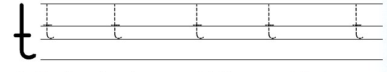
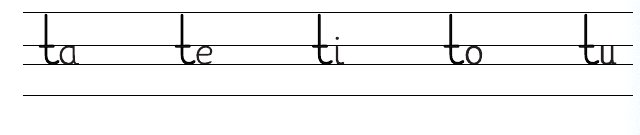
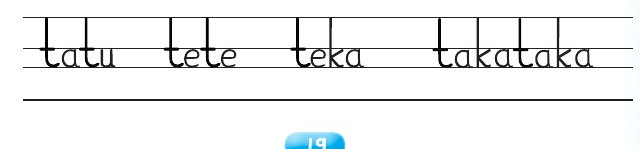

Somo la pili: Kuandika herufi ya konsonanti
Somo la pili
Kuandika herufi ya konsonanti
Katika somo hili utajifunza kuandika herufi ya
konsonanti .
Chora mchoro huu kwenye daftari.
Andika jibu kwa mkono katika sehemu hii.
Fuatisha herufi ya konsonanti .

Andika jibu kwa mkono katika sehemu hii.
Andika herufi ya konsonanti hii kwenye daftari.
Mfano wa kuangalia
Andika jibu kwa mkono katika sehemu hii.
Andika silabi hizi kwenye daftari.

Andika jibu kwa mkono katika sehemu hii.
Andika maneno haya kwenye daftari.

Andika jibu kwa mkono katika sehemu hii.